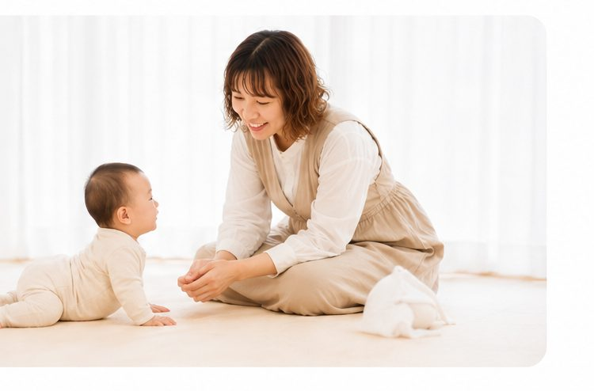

教室の想い
その子のペースを大切に、
ママにほっとできる時間を。
ママと赤ちゃんに寄り添う教室です。

教室の想い
ママと赤ちゃんに寄り添う教室です。
今は育児や発達の情報があふれ、「どれが正解なんだろう」「うちの子には何が合うのかな」——そんな迷いを抱えながら、毎日を過ごしているママは少なくありません。
私自身も、我が子の発達に悩んだ時期がありました。一生懸命向き合っているのに、不安が消えない。そんな日々を、3児のママとして経験してきました。
だからこそ私は、その子のペースを何よりも大切にしながら、ママが安心して気持ちを話せる、あたたかな場所でありたいと思っています。
Meaning of “Lima”
ママの手で赤ちゃんに触れ、その温もりが発達を育てる。
そしてその手が、ママ自身をも癒していく。
そんな想いを、この名前に込めました。
For Baby & Mama
ベビーコンディショニングを通して、赤ちゃんの身体の使い方や発達を見ながら、その子に合った関わりを一緒に考えます。
アロマやセルフケアなどを通して、ママ自身の心と体も整える時間を一緒につくっていきます。
子どものことばかりで自分を後回しにしがちなママが、「自分のことも大切にしていい」と思える場所を目指しています。
Message
ここで過ごす時間が、親子の毎日をやさしく、あたたかく。「愛おしい」と感じる瞬間が、少しずつ増えていきますように。
MamaLima Room りさ
MamaLima Room


